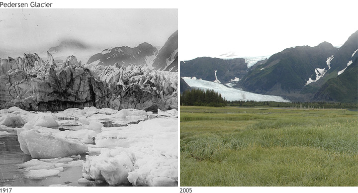
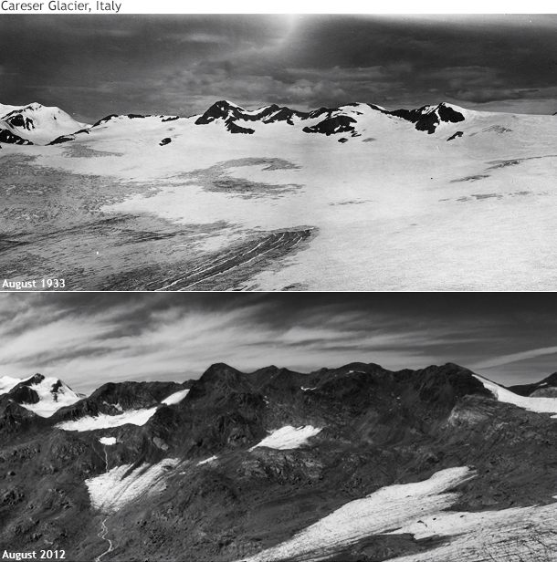
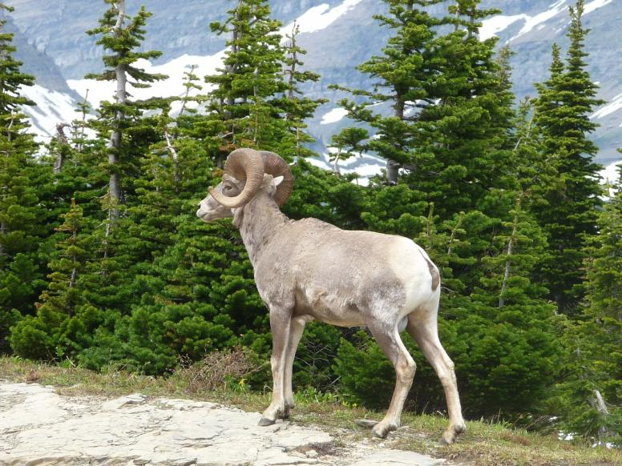
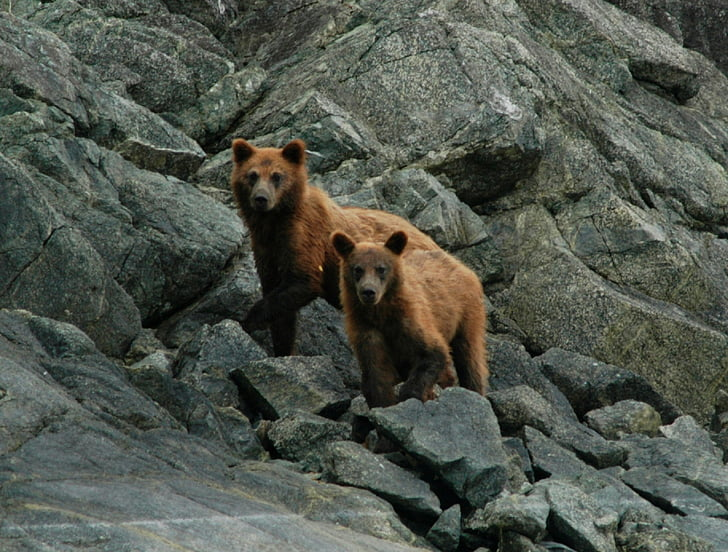
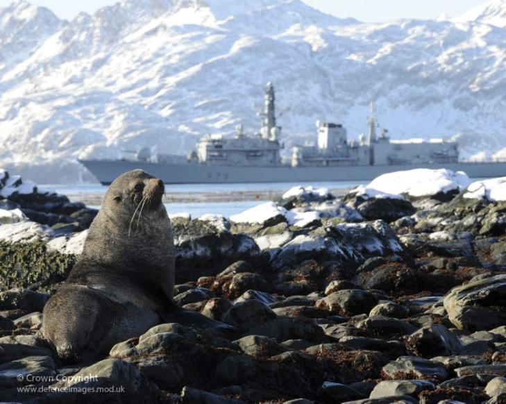
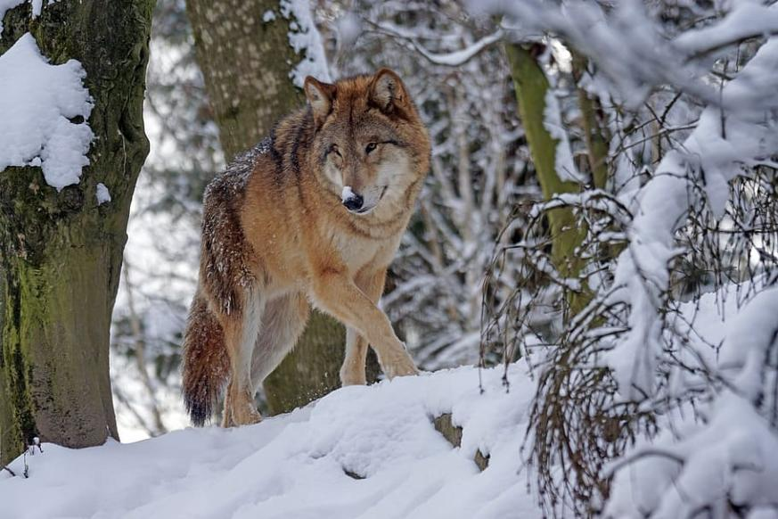
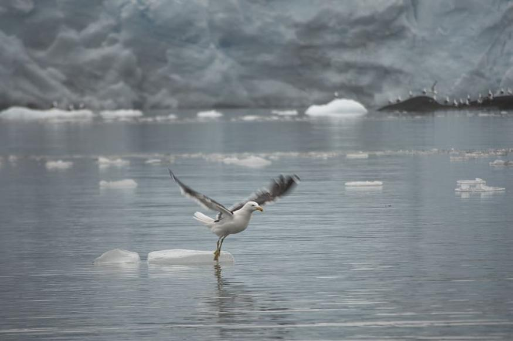
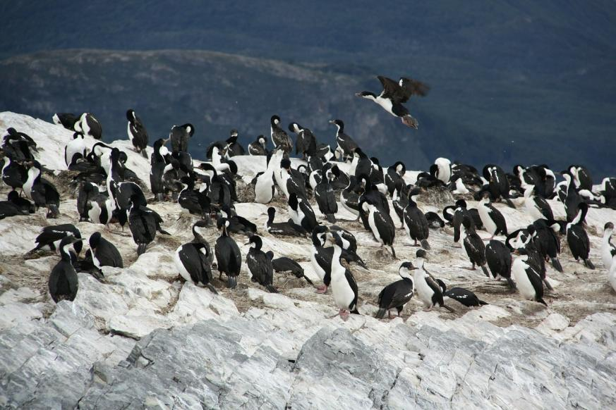

There are over 190,000 glaciers around the world. Explore the map to see thousands of glacier locations across the globe.
Glaciers Disappearing

Over the last few decades, glaciers have been disappearing all over the world due to the human-impact on Earth's climate. The Pedersen Glacier, along with many other glaciers around the world, have reduced in mass greatly. Scientists continue to research not only how Earth's climate during the ice age effected glacier mass, but also how humans are causing glaciers to disappear in modern day.

Glacier Wildlife






Devastatingly, as these glaciers disappear, ecosystems do too. Many species rely on the ecosystems glaciers provide, and with many of these ecosystems being destroyed, species will go extinct.
Many animals who live along the delicate glacier ecosystem have adapted to the unique conditions. The drastic changes in the glacier ecosystems over the last several years have disrupted these once
balanced ecosystems. Species living in glacier streams are arguably the hardest hit. Many fish living in glacier streams are not used to the large amounts of ice water being melted into the streams
causing many species to suffer. But, it's not too late yet. Help these thousands of animals keep their homes. Take steps to prevent these harmful effect of human-caused climate change.